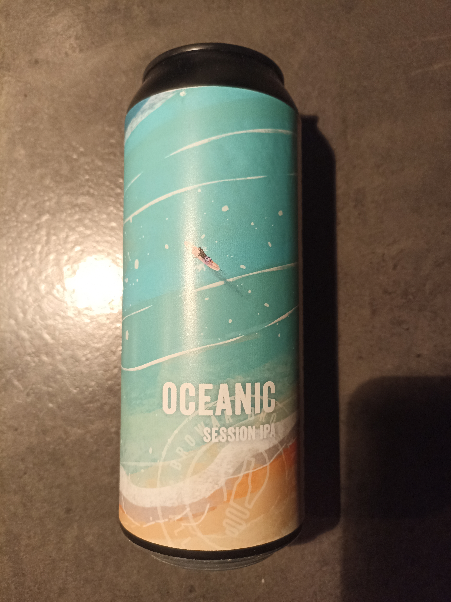

Oceanic to połączenie starej szkoły IPA, gdzie goryczka była równie istotna, co zapach, z nową - każącą wsypać tyle chmielu na aromat, by buchał on już od momentu odbezpieczenia zawleczki. Nasze Session IPA ma więc 60 IBU przy 12 stopniach Plato, ale też hop rate na poziomie 17,5 g/l, naszym zdaniem optymalny dla takiego piwa.
Oceanic orzeźwia i gasi pragnienie. Jest ekstremalnie pijalny i bardzo sesyjny. Zachwyca cytrusami (pomarańcze, cytryny, grejpfruty) i owocami tropikalnymi (marakuja, ananas, papaja, melon). Słowem: to idealny towarzysz dla ochłody na łonie natury oraz dla podlania letnich spotkań ze znajomymi.